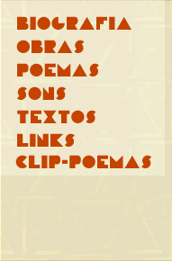

|
|  |
(Questions formulated by K.David Jackson, Eric Vos & Johanna Drucker. Replies by Augusto de Campos, translated by K.David Jackson) 1. What dimensions of contemporary poetics are directly engaged with concretism? A. I see Concrete poetry as directly engaged with the practices of vanguard, experimental or - as it should probably more adequately be called - inventive poetry. I think that the task of Concrete poetry, after it appeared in the 50s, was to reestablish contact with the poetry of the vanguards of the beginning of the century (Futurism, Cubofuturism, Dada et alia), which the inlervention of two great wars and the proscription of Nazi and Stalinist dictatorships had condemned to marginalization. A similar movement occurred in the 50s in music, with the recuperation of the work of the Vienna Group (Schoenberg, Webern, Berg), the rediscovery of the great indnidual experimentalists (Ives, Varese, etc.), and the intervention of new vanguard composers, from Boulez to Stockhausen to Cage. In terms of the poets whom Pound termed "masters," "diluters," etc., the practitioners of Concrete poetry situate themselves, or hope to be situated, programmatically, in the category of the "inventors," that is, those who are engaged in the pursuit of new forms. 2. How do you see the historical precedents of your own Concrete work? If you are not discussing your own work, please select a specific text on which to base your comments. A. For me, the dividing line for inventive poetic language in modern times is Mallarme's work Un coup de dés (1897), a poem conceivod intersemiotically as a fragmentary structure ("subdivisions prismatiques de l'Idée"), conjoining visual mural and musical score. With the acceptance of that work, it became possible to revisit the experiences of the vanguards of the beginning of the century and conceive of new elaborations. "Sans presumer de l'avenir qui sortira d'ici, rien ou presque un art," the last Mallarme - from Un coup de dés to Le Livre catalyzes and spreads the principal future alternatives of poetic language. In his final period and in the subsequent developments of the historical vanguards, which will be recycled and radicalized by Concrete poetry, one encounters the formal presuppositions of the poetry of the Technological Era, which greatly expands throughout the second half of the century. Besides Mallarmé and the historical vanguards, I would place as direct precedents Ezra Pound (the ideogrammatic method, the collage and metalanguage of the Cantos), James Joyce (the vocabulistic kaleidoscope of Finnegans Wake and its textual polyreadings), Cummings (the atomization and syntactical dislocation of his most experimental poems), and, on a second level, more idiosyncratic and less rigorous, the experimental, minimalist, and molecular prose of Gertrude Stein. In the special case of Brazilian poetry, the Sousandrade of O inferno de Wall Street (The Wall Street Hell) with its precollage epigrammatic mosaics, Oswald de Andrade and the "anthropophagic" instantpoem, the constructivist engineering of João Cabral [de Melo Neto]. In a transdisciplinary mode, I would mention the transformations of musical language from Webern to Cage and of the visual from Malevich/Mondrian to Duchamp. 3. What are the theorectical underpinnings which distinguish your works from that of historical precedentes or contemporaries? A. In view of the specific historical context in which it occurred, Concrete poetry obviously did not participate either in the ideology of Symbolism, which still underlies Mallarme's poetics, or in the mecanopolitical Futurist utopias, or in Dadaist nihilism. Concrete poetry took a position as a poetics of objectivity, attempting simply to place its premises at the roots of language, with the intention of creating new operational conditions for the elaboration of a poem in the sphere of technological revolution. Technically, Concrete poets can be distinguished from their antecedents by the radicalization and condensation ofthe means of structuring a poem, on the horizon of the means of communication of the second half of the century.That implies, among other characteristics, the following: greater constructive rigor in relation to the graphic experiences of Futurists and Dadaists; greater concentration of vocabulary; emphasis on the nondiscursive character of poetry, suppression or relativization of syntactic links; making explicit the materiality of language in its visual and sonorous dimensions; free passage between verbal and nonverbal levels. Poems such as "terra" by Décio Pignatari or "cristal" by Haroldo de Campos, from the 50s, or my "cidadecitycite" or "olho por olho" from the 60s typify these characteristics. Concrete poets may be differentiated from other experiences (zaum, lettrisme, phonetic poetry) for not rejecting semantic values but rather placing them on equal footing with other material, visual, and sonorous parameters of the poem. They differentiate themselves from the "chance poetry" of Cage and others for not abdicating control of the structure of the poem, although allowing for chance interventions. 4. To what extent is the work you are discussing different from the work of the concrete poets of the 1950s and 1960s? How? A. Now four decades since the first experiences of Concrete poetry, I would say that the 50s and 60s were the period of greatest orthodoxy of the movement, something like the serialization of all musical parameters proposed by European postWebernian musicians. In the later decades there occurred a greater flexibility of poetic language in the sense of recuperation of phrasic structures (in relation to the elementarism of the first phase, with poems made up of only one word or of a few spatialized substantives) and of the inclusion of chance (with the interventions of Cage), but that flexibility always observed a compositional rigor and the principle of functionality or of the formal necessity of the poem. Such an opening became inevitable in view of the redundancy of process and of its degradation, brought about by the ineffectiveness of many realizations, especially in the area of visual poetry, characterized by a semantic insignificance analogous to many baroque graphic "labyrinths," which, with the superficiality of repeated graphic emblems, did not amount to more than the vacuity of epithalamian or funerial elegies. Such an opening should not be confused either with with the apparent complexity of the simply chaotic surrealist texts that used graphic space without any satisfactory formal basis. Works of the 80s and 90s are, on the one hand, freer in relation to the orthodoxy of the first years and, on the other, more intensely participatory in the challenge of new technologies, which have produced digitalized poems, graphic and sound animation, and multimedia and intermedia processes. In this way, the "wishful thinking" of the 50s came about with computers, an ideal space for "verbivocovisual" adventures. 5. Is there a poetics of concretism or is concrete poetry a formal device rather than a conceptual premise? A. As I see it, Concrete poetry did not come about as a formal specialization in the field of modern poetry, as one could speak of carmenfiguratum in antiquity, but rather as a proposed radicalization of poetic language in which the visual aspects constitute just one of the relevant parameters. What Concrete poetry sought was to recuperate the specificity of poetic language itself, the materiality of the poem and its autonomy, beginning with a revision and radicalization of the methods of modern poetry and of the elaboration of a new creative project in the context of new media. 6. Thesis: "Concretism, one of the most radical avantgarde trends of this century engaged in a critical reevaluation of the artistic object and its place in society, had a new way of looking at and reading tradition. It was a forerunner of later neobaroque and postmodern trends." Please give your evaluation or judgment of this artist's perspective from an artist's participant's point of view, as it relates to your own work or poetics, or to your critical judgment of concretist experimentation. A. I don't think that either of the expressions - "neobaroque" or "postmodern" - are sufficiently adequate to characterize the actual moment in its possible relations with Concrete poetry. The term "neobaroque" is too charged with historicity and could lead to confusions, if one considers that it usually takes in practices of Hispanic and Latin American poetry not connected to the poetics of concretism. As to "postmodern," it is a concept of indefinite contours, hardly defensible, to the degree that the presuppositions of "modern" are still in effect; it seems rather to be a label that serves as a pretext for ecleticisms of a conservative nature, actually pre or antimodernist. I would stop at the first phrase of the thesis, adding in place of "It was a forerunner, etc." that Concrete poetry once again took up speculations of an experimental lineage in contemporary poetry, forming relevant presuppositions for the development of poetry in the context of new media that are growing in the technological phase of modernity. It constituted, at the least, an important movement for keeping alive the revolutionary ideology of permanent and autonomous experimentation and redefining vanguard action in the second half of the century, assuming this position under the category of "poetry of invention" (in contrast to the more palatable "expressive poetry") as a means of resistance against the massification and the banalization of literature imposed by the new means of communication and the stagnation of conventional literature. |